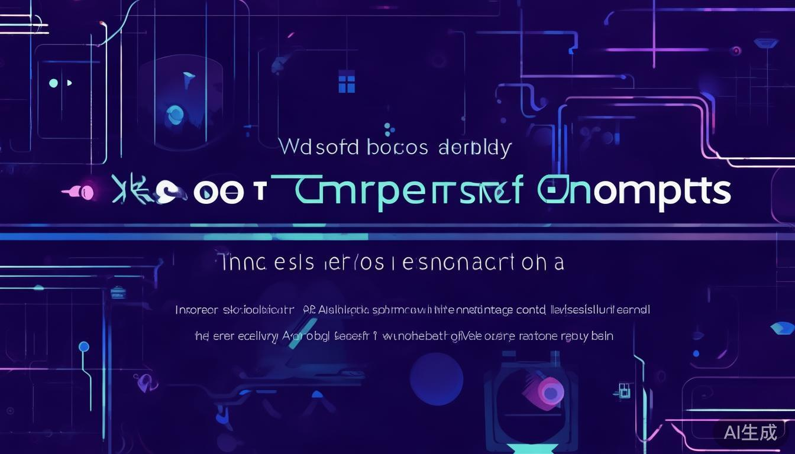

提示词工程入门：从提问到指挥
第17章 提示词工程入门：从提问到指挥
你是否曾觉得AI答非所问、输出空洞，甚至编造信息？本章将帮你跳出“随机提问”的误区，掌握提示词工程的核心逻辑：从模糊提问到精准指挥AI完成文案撰写、数据整理、问题拆解等任务，学完即可写出稳定输出高质量结果的提示词，让ChatGPT、文心一言等工具真正成为你的效率助手。
什么是提示词
提示词（Prompt）是你输入给大语言模型（如GPT-4o、Claude 3.5 Sonnet、文心一言4.0）的指令集合，本质是你和AI沟通的“编程语言”——你不需要懂代码逻辑，只需要用自然语言明确告知AI“要做什么、基于什么信息、输出成什么样”。很多人觉得AI“不够聪明”，本质是提示词没有传递清晰的需求边界，而非模型能力不足。
和传统搜索引擎的关键词检索不同，大模型会基于提示词的完整语境生成内容，而非匹配已有网页片段。比如同样输入“咖啡推荐”，搜索引擎会返回探店榜单链接，而合格的提示词会让AI结合你的乳糖不耐受体质、30元以内预算、办公场景需求，直接生成适配的上海静安区咖啡店清单，这就是提示词的指挥价值。
提示词的核心组成要素

一个能稳定输出合格结果的提示词，通常包含4个核心要素，你可以根据任务复杂度灵活增减，不需要每次都凑齐全部模块：
- 指令：明确告知AI要执行的核心动作，比如“撰写”“整理”“翻译”“纠错”，避免用模糊的“帮我看看”“写点东西”
- 上下文：给AI提供任务的背景信息，比如你的身份、目标受众、已有参考资料、约束条件，这是避免AI输出泛泛内容的关键
- 输入数据：需要AI处理的具体素材，比如待翻译的英文段落、待整理的销售数据、待修改的文案草稿
- 输出格式：明确要求AI的呈现形式，比如Markdown表格、分点列表、100字以内小红书文案、Python代码块，减少后续调整成本
我们可以用一个基础示例看要素组合的效果：
【指令】请帮我整理本周的待办优先级
【上下文】我是互联网公司运营专员，本周核心目标是完成618活动预热方案
【输入数据】待办清单：1.和设计对接活动海报 2.参加部门周会 3.取快递 4.写预热脚本 5.回复用户评论
【输出格式】用四象限表格呈现，标注每一项的预计耗时这个提示词输出的结果，会比只说“帮我整理待办”精准80%以上，因为你给AI划定了清晰的决策框架。
撰写提示词的6大实用技巧
掌握核心要素后，你可以用6个可直接落地的技巧快速提升提示词质量，不需要记忆复杂理论：
- 角色锚定：开篇先给AI分配明确身份，比如“你是有10年经验的高中数学特级教师，擅长用生活化案例讲解难题”，比直接说“给我讲数学题”的输出更贴合受众
- 边界明确：说清楚“不要做什么”，比如“不要用专业术语”“不要出现网络热梗”“字数控制在300字以内”，减少无效输出
- 参考锚定：给出你认可的示例风格，比如“参考《人民日报》评论员文章的正式语气”“按照我给的样例结构写”
- 步骤拆分：复杂任务要求AI分步骤执行，比如“第一步先提炼原文核心观点，第二步补充3个相关案例，第三步总结行动建议”
- 校验要求：要求AI自我检查，比如“写完后请核对数据是否和我提供的一致，有没有编造内容”
- 迭代空间：告诉AI可以主动提问补全信息，比如“如果我的需求有模糊的地方，请先列出需要确认的问题，不要直接生成内容”
这里要注意，技巧不是越多越好，简单任务（比如查某个概念的定义）只需要指令+输出格式即可，过度堆砌要素反而会干扰模型判断。
Zero-shot与Few-shot：给不给示例的差别
Zero-shot（零样本提示）是最常见的使用方式：你不给AI任何示例，直接提出任务要求，适合简单、通用、标准明确的任务，比如“把下面这句话翻译成英文”“计算123*456的结果”。目前GPT-4o、Claude 3等模型对通用任务的Zero-shot能力已经非常成熟，简单任务不需要额外加示例。
Few-shot（少样本提示）则是当你对输出格式、风格、逻辑有特殊要求时，给AI提供2-5个正确示例，让AI模仿示例的规则生成内容，解决Zero-shot输出不符合预期的问题。比如你需要AI把用户反馈统一归类为3种标签，就可以先给示例：
请把用户反馈归类为【产品问题】【物流问题】【服务问题】三类，示例如下：
1. 用户说“收到的杯子盖拧不严” 产品问题
2. 用户说“快递3天还没更新物流” 物流问题
3. 用户说“客服半天不回消息” 服务问题
现在请归类：“买的面膜发错了款式，找客服也没人处理”Few-shot的核心是示例要覆盖核心规则，数量不需要多，3个左右的准确示例就能让输出准确率提升60%以上，尤其适合格式统一的批量处理任务。
思维链CoT与ToT：让AI学会深度思考
很多人遇到复杂推理任务（比如数学题、方案策划、逻辑排查）时，AI经常给出错误答案，本质是你没有让AI“一步步思考”，这时候就需要用到思维链（Chain of Thought, CoT）技巧：在提示词末尾加一句“请一步步思考，写出详细推理过程，最后再给出答案”，就能大幅提升复杂任务的准确率。
比如测试经典的“鸡兔同笼”问题，直接问答案GPT-3.5很容易算错，但加上CoT要求后，AI会先列变量、列方程、计算、验证，正确率能从30%提升到90%以上。如果是更复杂的创意、决策类任务，你还可以用思维树（Tree of Thoughts, ToT）技巧：要求AI先给出3个不同方向的思路，分别评估每个思路的优缺点，再选择最优方向输出完整内容。
ToT的提示词模板可以直接套用：
请帮我策划一场10人规模的部门团建，预算人均200元，时间是周五下午半天。
第一步：先列出3个完全不同方向的团建方案，分别说明每个方案的优势、劣势、适配场景
第二步：对比3个方案的成本、参与度、组织难度，选择最优方案
第三步：把最优方案拆解为详细的时间流程表，标注每个环节的负责人和注意事项CoT适合线性推理的任务，ToT适合需要多维度权衡的复杂任务，两者都能避免AI“跳步”导致的错误结论。
提示词常见陷阱与避坑方法
哪怕你掌握了所有技巧，也容易踩3个常见陷阱，导致输出结果不符合预期，甚至带来风险：
第一个陷阱是模糊指令，比如“帮我写个好点的活动方案”，AI不知道“好”的标准是省钱、有创意还是易执行，自然会输出空洞的套话。避坑方法是把抽象形容词替换成可量化的标准，比如把“好点的方案”改成“预算不超过5000元、能让80%参与用户发朋友圈、筹备时间不超过3天的方案”。
第二个陷阱是AI幻觉，即AI会编造不存在的书籍、论文、数据、案例，说得言之凿凿但完全不符合事实，尤其在专业领域（医疗、法律、学术）风险极高。避坑方法是：一是要求AI标注信息来源，二是只让AI基于你提供的资料回答，明确说明“如果资料里没有相关信息，请直接说不知道，不要编造内容”，三是涉及事实性内容一定要人工核验。
第三个陷阱是越狱风险，即有人会通过特殊提示词绕过AI的安全限制，生成违规、违法、不道德的内容，同时你在输入提示词时，也要避免把公司机密、个人隐私等敏感信息输入公共大模型，避免数据泄露。
两个完整提示词示例对比
我们用“撰写618美妆产品朋友圈文案”这个常见任务，做低质量和高质量提示词的效果对比，你可以直观看到差异：
| 维度 | 低质量提示词 | 高质量提示词 |
|---|---|---|
| 提示词内容 | 帮我写个618美妆产品的朋友圈文案 | 你是有5年经验的美妆私域运营，擅长写真实感强、不生硬的朋友圈种草文案，受众是20-30岁的女性上班族，预算在100-300元之间。 产品信息：我们店新上的持妆粉底液，售价199元，618活动买就送价值99元的妆前乳小样，持妆8小时不暗沉，适合混油皮。 要求：1.用普通女生分享的语气，不要硬广感；2.字数控制在150字以内；3.最后加一句引导私信咨询的话术；4.不要用“yyds”“绝绝子”这类过时网络热梗。 |
| 输出结果 | 618大促来袭！我们家的美妆产品超划算，好用又便宜，姐妹们快冲！错过等一年！ | 谁懂啊夏天带妆出门的痛！之前用的粉底液一到下午就T区暗沉发黄，上周试了新到的持妆款，上周六逛了3小时街出了一脸汗，妆面还是干干净净的，完全没氧化发灰。 这次618活动199元还送99元的妆前乳小样，混油皮姐妹真的可以试试，想试色的可以私信我~ |
从对比能看出来，高质量提示词不是写得越长越好，而是每一句话都在给AI传递明确的约束和参考，输出的内容几乎不需要修改就能直接使用。
小结与练习
核心收获
- 提示词是人和大模型沟通的精准语言，核心由指令、上下文、输入数据、输出格式4个要素组成，清晰的边界比华丽的辞藻更重要。
- 不同任务要匹配不同的提示策略：简单任务用Zero-shot快速完成，格式要求明确的任务用Few-shot给示例，推理类任务加CoT要求逐步思考，复杂决策类任务用ToT多方案权衡。
- 提示词不是一次写就的，要警惕模糊指令、AI幻觉、隐私泄露三个陷阱，通过调整约束条件、补充参考信息迭代优化，才能得到稳定的高质量输出。
动手练习
- 基础练习：用提示词四要素法，写一个让AI帮你整理本周工作待办的提示词，要求用四象限表格输出，标注每项任务的预计耗时。
- 进阶练习：用Few-shot技巧，让AI把你最近收到的5条工作/生活消息，统一归类为“紧急重要”“重要不紧急”“紧急不重要”“不紧急不重要”四类，先写3个示例再让AI处理。
- 避坑练习：找一个之前AI给你的包含幻觉的回答（比如编造的书籍、数据），重新写提示词要求AI仅基于你提供的可靠信息回答，不允许编造内容，对比输出结果的准确性。
扩展阅读方向
可以阅读OpenAI官方发布的《Prompt Engineering Guide》（提示词工程指南），里面有针对GPT-4o、o1等模型的官方最佳实践、参数调优建议（比如temperature参数设置：创意类任务设0.7-1.0，事实类任务设0.1-0.3），以及更多行业场景的提示词模板。
本文由本站 AI 创作整理，内容基于公开知识/官方资料提炼，信息请以官方发布为准； 涉及的历史事件、产品与数据均可在公开渠道查证，本站不编造来源。引用外部内容遵循其原始许可，标注出处即可。